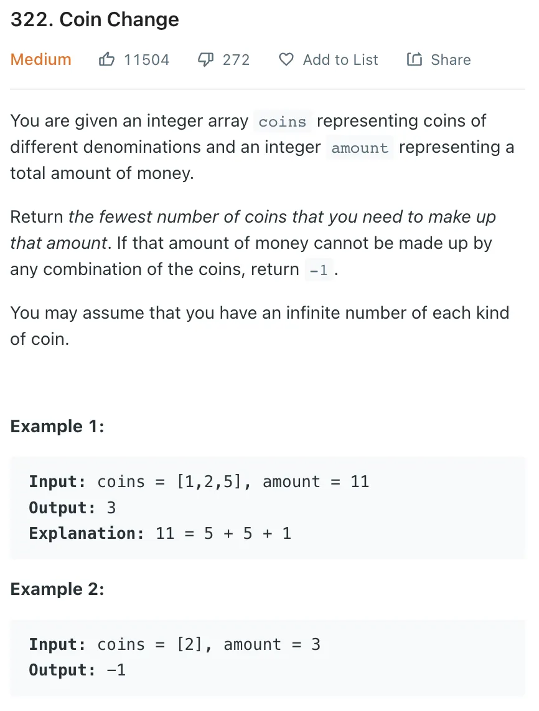
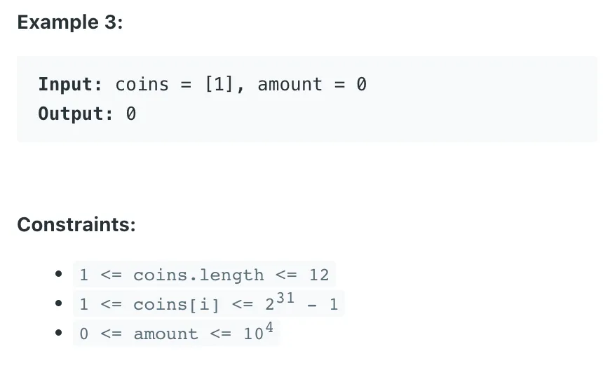

322. Coin Change
考過的公司：Amazon、Bytedance、tiktok
Question


✍🏽 My Solution
Runtime: 22 ms, faster than 66.49% of Java online submissions for Coin Change.
Memory Usage: 45.1 MB, less than 52.43% of Java online submissions for Coin Change.
class Solution {
public int coinChange(int[] coins, int amount) {
int[] dp = new int[amount + 1];
for (int i = 0; i < dp.length; i++) {
dp[i] = amount + 1; // 不可能的數字
}
dp[0] = 0;
for (int i = 1; i <= amount; i++) {
for (int coin : coins) {
if (i < coin) continue;
dp[i] = Math.min(dp[i], dp[i - coin] + 1);
}
}
return dp[amount] == amount + 1 ? -1 : dp[amount];
}
}
🧠 Thought Process
- Why did I choose this particular implementation?
- 參考LeetCode 322. Coin Change and 518. Coin Change 2 换零钱
- 舉例：每個階段從1、2、5選擇一個硬幣
- int dp[amount+1]，dp[i]表示湊夠i元最少需要多少硬幣
- 到達i這個狀態，那上一步只有可能是走1、2、5個硬幣，也就是從狀態i-1 i-2 i-5轉化過來。dp[i]值也從dp[i-1]、dp[i-2]、dp[i-5]推導出來
- dp[i] = dp([i-1], dp[i-2],dp[i-5]) + 1
- What is the time/space complexity of my solution? How do I know?
- time: O(amount * n)，n 為面額數
- space: O(amount)
Solution #1 [Recursive]
Time Limit Exceeded
class Solution {
int res = Integer.MAX_VALUE;
public int coinChange(int[] coins, int amount) {
if (coins.length == 0){
return -1;
}
change(coins, amount, 0);
// 如果没有任何一种硬币组合能组成总金额，返回 -1。
if (res == Integer.MAX_VALUE) {
return -1;
}
return res;
}
private void change(int[] coins, int amount, int count) {
if (amount < 0) return;
if (amount == 0) {
res = Math.min(res, count);
}
for (int i = 0; i < coins.length; i++) {
change(coins, amount - coins[i], count + 1);
}
}
}
Solution #2 [遞歸 - memo剪枝]
Runtime: 65 ms, faster than 19.24% of Java online submissions for Coin Change. Memory Usage: 44.9 MB, less than 69.18% of Java online submissions for Coin Change.
class Solution {
public int coinChange(int[] coins, int amount) {
if (coins.length == 0){
return -1;
}
int[] memo = new int[amount];
return change(coins, amount, memo);
}
private int change(int[] coins, int amount, int[] memo) {
if (amount < 0) return -1;
if (amount == 0) {
return 0;
}
// 记忆化的处理，memo[n]用赋予了值，就不用继续下面的循环
// 直接的返回memo[n] 的最优值
if(memo[amount-1] != 0){
return memo[amount-1];
}
int min = Integer.MAX_VALUE;
for (int i = 0; i < coins.length;i++){
int res = change(coins, amount - coins[i], memo);
if (res >= 0 && res < min){
min = res + 1; // 加1，是为了加上得到res结果的那个步骤中，兑换的一个硬币
}
}
memo[amount-1] = (min == Integer.MAX_VALUE ? -1 : min);
return memo[amount-1];
}
}
Explanation (in my words)
- How does their solution work?
-
在进行递归的时候，有很多重复的节点要进行操作，这样会浪费很多的时间。 使用数组 memo[ ] 来保存节点的值 memo[n]表示钱币 n 可以被换取的最少的硬币数，不能换取就为 -1 findWay 函数的目的是为了找到 amount数量的零钱可以兑换的最少硬币数量，返回其值 int
在进行递归的时候，memo[n]被复制了，就不用继续递归了，可以直接的调用
-
Solution #2 [爬樓梯解法]
Explanation (in my words)
- How does their solution work?
- 每階段從1、2、5選擇硬幣
Solution #1 [王爭-DP二維數組]
Runtime: 572 ms, faster than 5.04% of Java online submissions for Coin Change. Memory Usage: 55 MB, less than 15.92% of Java online submissions for Coin Change.
/*
完全背包：正好裝滿背包最少需要多少物品？
*/
class Solution {
public int coinChange(int[] coins, int amount) {
int n = coins.length;
// 第i个硬币决策完之后，凑足金额j需要的最少硬币数dp[i][j]
int[][] dp = new int[n][amount+1];
for (int i = 0; i < n; ++i) {
for (int j = 0; j <= amount; ++j) {
dp[i][j] = Integer.MAX_VALUE;
}
}
for (int c = 0; c <= amount/coins[0]; c++) {
dp[0][c * coins[0]] = c;
}
for (int i = 1; i < n; ++i) { // 动态规划状态转移
for (int j = 0; j <= amount; ++j) {
int k = j / coins[i];
for (int c = 0; c <= k; ++c) {
if (dp[i-1][j-c*coins[i]] != Integer.MAX_VALUE
&& dp[i-1][j-c*coins[i]] + c < dp[i][j]) {
dp[i][j] = dp[i-1][j-c*coins[i]] + c;
}
}
}
}
if (dp[n-1][amount] == Integer.MAX_VALUE) return -1; // 裝不滿
return dp[n-1][amount]; // 跟「最值」類型只差在這一行，判斷最最終狀態可不可達
}
}